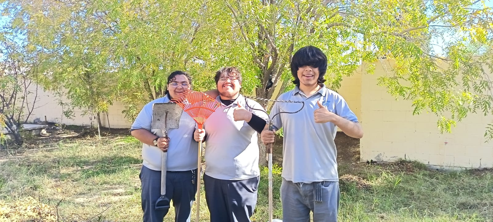
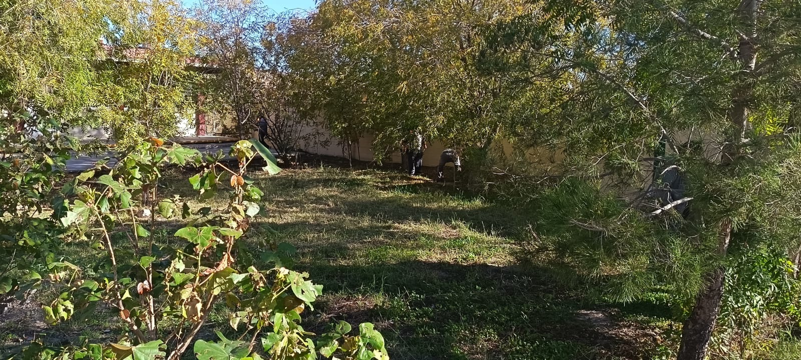
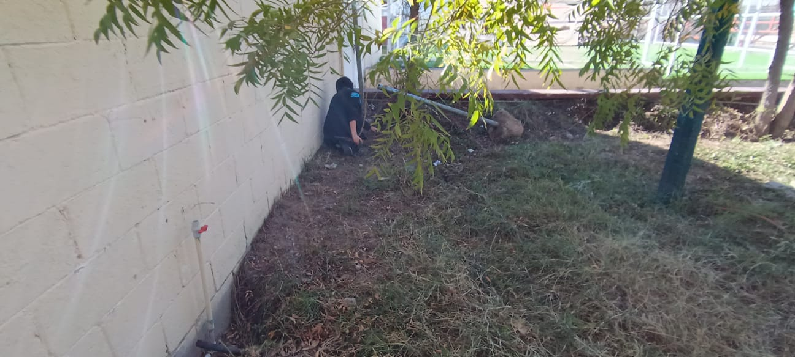
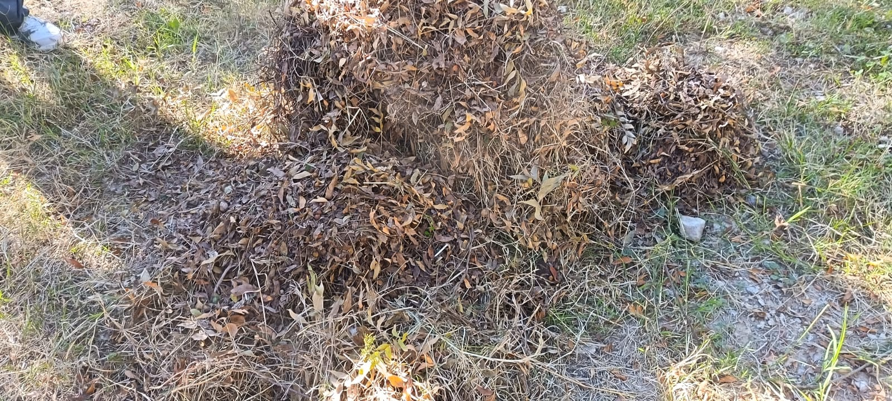

Proyección Comunitaria: Acción Más Allá del Plantel
El impacto del Programa Aula, Escuela y Comunidad (PAEC) no se limita únicamente a las instalaciones de nuestra preparatoria. Como parte de nuestro compromiso social y ambiental, los estudiantes del CBTis No. 269 organizamos brigadas de intervención para apoyar directamente en el saneamiento y rescate de espacios públicos e instituciones educativas vecinas.
Para lograr una mayor cobertura, diferentes grupos de alumnos se distribuyeron estratégicamente en distintas escuelas y zonas aledañas a la preparatoria. En el caso de nuestra brigada, acudimos a la Escuela Secundaria Federal No. 2 con el objetivo de limpiar, deshierbar y rehabilitar sus áreas verdes en beneficio de toda su comunidad estudiantil.
1. Jornada de Limpieza en la Secundaria Federal No. 2
Durante esta intervención comunitaria trabajamos de manera coordinada utilizando herramientas de jardinería como palas, rastrillos y bolsas de recolección para recuperar zonas verdes que presentaban acumulación de hojarasca seca, maleza y residuos dispersos.
Organización por Brigadas y Despliegue Regional
Mientras distintos equipos del CBTis No. 269 atendían parques, banquetas y planteles cercanos en los alrededores de la preparatoria, nuestro equipo concentró esfuerzos en los jardines interiores y perímetros arbolados de la Secundaria Federal No. 2, logrando despejar el terreno y reunir todo el material orgánico en puntos específicos para su retiro adecuado.
2. Evidencia Fotográfica del Trabajo Comunitario
Registro visual de las actividades realizadas por nuestra brigada en las áreas verdes de la Escuela Secundaria Federal No. 2:

Figura 1. Integrantes de nuestra brigada del CBTis No. 269 equipados con pala y rastrillos durante la jornada.

Figura 2. Panorámica de las zonas arboladas y áreas verdes rehabilitadas dentro de la secundaria.

Figura 3. Labores de limpieza manual y retiro de residuos acumulados junto a las bardas del plantel.

Figura 4. Resultado de la recolección de hojarasca y maleza seca reunida para despejar el área verde.
3. Beneficios e Impacto Social de la Intervención
El trabajo colaborativo entre estudiantes de nivel medio superior y escuelas de educación básica genera resultados positivos en cuatro niveles:
- Recuperación de espacios saludables: Las áreas verdes limpias y libres de maleza brindan un entorno más seguro, higiénico y agradable para los alumnos de secundaria.
- Prevención de focos de infección y plagas: El retiro de hojarasca acumulada y basura evita la proliferación de insectos, roedores y riesgos de incendio en temporada seca.
- Ejemplo y liderazgo juvenil: Al vernos trabajar activamente en su escuela, los estudiantes más jóvenes adoptan una cultura de respeto y cuidado por sus propias instalaciones.
- Fortalecimiento del tejido comunitario: Se consolidan los lazos de apoyo mutuo entre el CBTis No. 269 y las instituciones educativas vecinas de Ciudad Juárez.